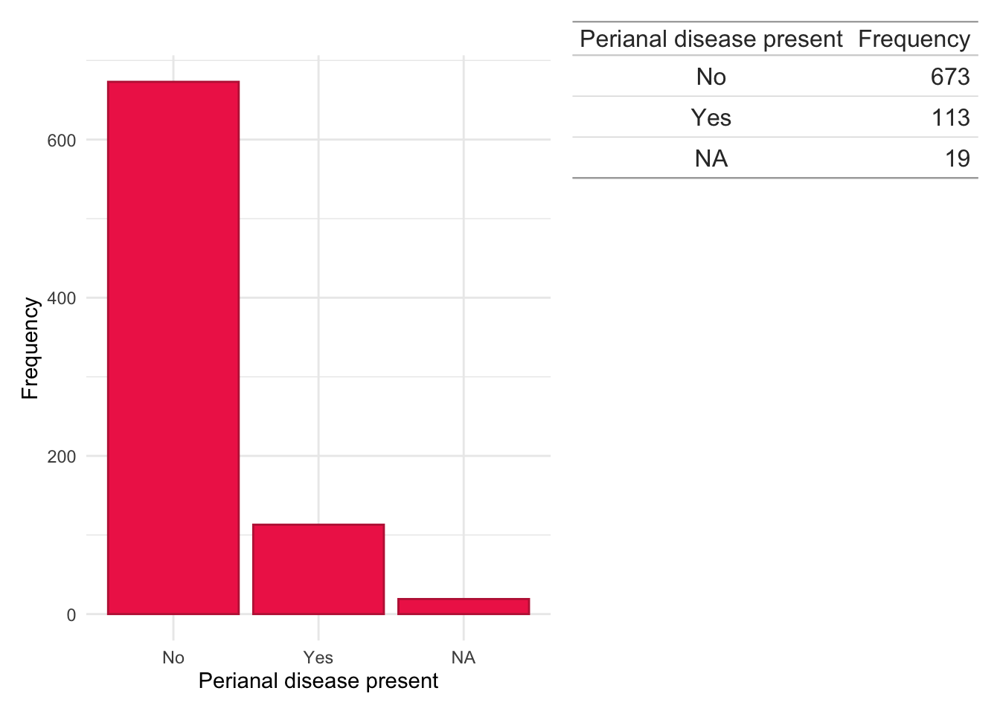

This page provides descriptive analyses of the cohort at baseline, the time of IBD diagnosis. Following clustering based on FC or CRP trajectories, associations will be explored between cluster membership and these data.
As FC and CRP are analysed independently, the data is split into subjects who met the criteria for FC and CRP analyses. The colours used in the plot are specific to either the FC or the CRP cohorts which are also under separate tabs.
Categorical data is presented via barcharts and frequency tables whilst continuous data are presented via density plots and quantile tables. Missingness is not reported if there are no missing data.
Age at diagnosis
For subjects in the LIBDR, only the year of birth was extracted (not the whole date) from NHS records to reduce the identifiability of subjects. This also follows the GDPR practice of only requesting data which are strictly required.
The age at time of diagnosis has been calculated by subtracting the year of birth from year of IBD diagnosis and is therefore not entirely accurate. However, an error of within one year for age is reasonable for this study and is expected to have a minimal impact on findings.
Details for how time of diagnosis was obtained is described in a following section.
In Figure 1, we see IBD incidence by age similar to characterisations by Lewis et al. (2023), A bimodal distribution with a a large peak in the mid-20s and a smaller peak in middle age.
Age at diagnosis is missing for 0 (0%) subjects in the FC analysis.
dict<-fcal.all[, c("ids", "sex")]%>%distinct(ids, .keep_all =TRUE)%>%merge(x =dict, by ="ids", all.x =TRUE, all.y =FALSE)# Update NA sex if sex available from updateddict<-merge(dict,updated[, c("ids", "sex")], by ="ids", all.x =TRUE, all.y =FALSE)for(iin1:nrow(dict)){if(is.na(dict[i, "sex.x"])&!is.na(dict[i, "sex.y"])){dict[i, "sex.x"]<-dict[i, "sex.y"]}}dict$sex<-dict$sex.xdict$sex.x<-dict$sex.y<-NULLdict$sex<-plyr::mapvalues(dict$sex, from =c("F", "M"), to =c("Female", "Male"))
Similar to age, sex was obtained directly from health records.
IBD type, defined as either either Crohn’s disease, ulcerative colitis, or inflammatory bowel disease unclassified (IBDU), was identified using a methodology previously described for the Lothian IBD Registry (Jones et al. 2019).
Where possible, full dates for IBD diagnosis were extracted which were used to determine if there were biomarker observations within ± 90 days of diagnosis for each subject in the LIBDR. Exact dates for some subjects were unavailable in which case either the first day of the month, if month was available, or middle of the year, if only year was available, was used.
In addition to exploring individual years, we have also grouped years of diagnosis into ‘eras’ to explore potential era effects. This will allow us to explore if changes in clinical practice over time could have influenced cluster trajectories. The following ‘eras’ are considered:
We can observe the majority of subjects in the FC analysis were diagnosed 2010–2014 with relatively few subjects diagnosed 2005–2009. This may limit our statistical power to detect era effects and is likely driven by there being relatively few FC tests in this time. Indeed, this finding may reflect changes in how FC has been used in clinical practice over time, transitioning from being strictly used as a diagnostic tool to having a role in both diagnosis and disease monitoring.
As a diagnostic observation was required for inclusion in the study, all study subjects have a baseline biomarker observation available. After reducing the biomarkers to only those meeting the study criteria, the first observation with respect to time was used. Ties in first observation times, which may arise from high-intensity monitoring in an inpatient setting, are not explicitly handled.
# Subjects in the FC analysiscd.pheno1<-read_xlsx(paste0(prefix, "2024-10-10/CD-pheno.xlsx"))%>%select(-Alex, -Comments)colnames(cd.pheno1)[c(3, 4)]<-c("sex", "Smoke")# Subjects in the CRP analysiscd.pheno2<-read_xlsx(paste0(prefix, "2024-10-24/CD-pheno-crp.xlsx"))%>%select(-Alex, -...10)cd.pheno<-rbind(cd.pheno1, cd.pheno2)cd.pheno<-cd.pheno%>%select(-diagnosis, -sex)%>%distinct(ids, .keep_all =TRUE)dict<-merge(x =dict, y =cd.pheno, all.x =TRUE, all.y =FALSE, by ="ids")
Montreal location
Code
dict$Location<-plyr::mapvalues(dict$Location, from =c("1","2","3","isolated vulval disease","L1/L4","L1+4","L2/L4","L3/L4","L3+4","NA","L4","No luminal"), to =c("L1","L2","L3",NA,"L1","L1","L2","L3","L3",NA,NA,NA))
dict$Behaviour<-plyr::mapvalues(dict$Behaviour, from =c("0","1","2","3","B0","C1","L2","L3","NA","No luminal","No luminal disease"), to =c(NA,"B1","B2","B3",NA,NA,NA,NA,NA,NA,NA))
dict.cd.fc<-subset(dict, ids%in%fcal$ids&diagnosis=="Crohn's Disease")counts<-data.frame(table(dict.cd.fc$Perianal, useNA ="ifany"))colnames(counts)<-c("Perianal disease present", "Frequency")dict.cd.fc%>%ggplot(aes(x =Perianal))+geom_bar(fill ="#541388", color ="#2E294E")+theme_minimal()+xlab("Perianal disease present")+ylab("Frequency")+wrap_table(gt(counts), space ="free_y")
Code
dict.cd.crp<-subset(dict, ids%in%crp$ids&diagnosis=="Crohn's Disease")counts<-data.frame(table(dict.cd.crp$Perianal, useNA ="ifany"))colnames(counts)<-c("Perianal disease present", "Frequency")dict.cd.crp%>%ggplot(aes(x =Perianal))+geom_bar(fill ="#EF2D56", color ="#BE2544")+theme_minimal()+xlab("Perianal disease present")+ylab("Frequency")+wrap_table(gt(counts), space ="free_y")

Code
dict.cd.both<-subset(dict, ids%in%crp$ids&ids%in%fcal$ids&diagnosis=="Crohn's Disease")counts<-data.frame(table(dict.cd.both$Perianal, useNA ="ifany"))colnames(counts)<-c("Perianal disease present", "Frequency")dict.cd.both%>%ggplot(aes(x =Perianal))+geom_bar(fill ="#42D9C8", color ="#15AB9D")+theme_minimal()+xlab("Perianal disease present")+ylab("Frequency")+wrap_table(gt(counts), space ="free_y")
Smoking status
Code
dict$Smoke<-plyr::mapvalues(dict$Smoke, from =c("?","0","1","1`","2","current","Current","Curent","ex","Ex","EX","N","never","Never","NEVER","Unknown", "NA"), to =c(NA,"No","Yes","Yes","Yes","Yes","Yes","Yes","Yes","Yes","Yes","No","No","No","No",NA,NA))
dict.cd.fc<-subset(dict, ids%in%fcal$ids&diagnosis=="Crohn's Disease")counts<-data.frame(table(dict.cd.fc$Smoke, useNA ="ifany"))colnames(counts)<-c("Previously smoked", "Frequency")dict.cd.fc%>%ggplot(aes(x =Smoke))+geom_bar(fill ="#541388", color ="#2E294E")+theme_minimal()+xlab("Previously smoked")+ylab("Frequency")+wrap_table(gt(counts), space ="free_y")
Code
dict.cd.crp<-subset(dict, ids%in%crp$ids&diagnosis=="Crohn's Disease")counts<-data.frame(table(dict.cd.crp$Smoke, useNA ="ifany"))colnames(counts)<-c("Previously smoked", "Frequency")dict.cd.crp%>%ggplot(aes(x =Smoke))+geom_bar(fill ="#EF2D56", color ="#BE2544")+theme_minimal()+xlab("Previously smoked")+ylab("Frequency")+wrap_table(gt(counts), space ="free_y")
Code
dict.cd.both<-subset(dict, ids%in%crp$ids&ids%in%fcal$ids&diagnosis=="Crohn's Disease")counts<-data.frame(table(dict.cd.both$Smoke, useNA ="ifany"))colnames(counts)<-c("Previously smoked", "Frequency")dict.cd.both%>%ggplot(aes(x =Smoke))+geom_bar(fill ="#42D9C8", color ="#15AB9D")+theme_minimal()+xlab("Previously smoked")+ylab("Frequency")+wrap_table(gt(counts), space ="free_y")
Advanced therapies in CD
Early advanced therapy in CD is particularly noteworthy given there is considerable evidence an early commencement of an advanced therapy in CD is associated with better disease outcomes (Noor et al. 2024; D’Haens et al. 2008).
Code
cd.bio1<-read.csv(paste0(prefix,"2024-10-29/cd-bio_to-do Master Copy (NathanNoID)",".csv"))bad.dates<-c("na","2017 00:00:00","?2018","01/10/2019 (induction course), restarted 01/06/2020","?2018-2023","?2022","UNKNOWN","No Follow up")ineligble<-c("(Single agent Rituximab and RCHOP therapy post liver transplant- 2014)","(Toculizamab for RA?)")cd.bio1<-cd.bio1%>%select(ids,Date.started...7, Date.started...10,Date.started...13,Date.started...16,Date.started...19,Date.started...22,Date.started...25)colnames(cd.bio1)<-c("ids","X1ST.LINE.START","X2ND.LINE.START","X3RD.LINE.START","X4TH.LINE.START","X5TH.LINE.START","X6th.line.start","X7TH.LINE.START")cd.bio1$X8TH.LINE.START<-NAtemp<-function(x){x[x%in%bad.dates]<-NAx}cd.bio1<-as.data.frame(lapply(cd.bio1, temp))cd.bio1<-fix_date_df(cd.bio1, colnames(cd.bio1)[-1], excel =TRUE)cd.bio2<-read.csv(paste0(prefix,"2024-10-29/cd-bio_general",".csv"))cd.bio2<-cd.bio2%>%select(ids,Date.1st.biologic,X2ND.LINE.START,X3RD.LINE.START, X4TH.LINE.START,X5TH.LINE.START,X6th.line.start,X7th.line.start,X8th.line.start)colnames(cd.bio2)<-c("ids","X1ST.LINE.START","X2ND.LINE.START","X3RD.LINE.START","X4TH.LINE.START","X5TH.LINE.START","X6th.line.start","X7TH.LINE.START","X8TH.LINE.START")cd.bio2<-as.data.frame(lapply(cd.bio2, temp))cd.bio2<-fix_date_df(cd.bio2, colnames(cd.bio2)[-1], excel =TRUE)cd.bio<-rbind(cd.bio1, cd.bio2)%>%distinct(ids, .keep_all =TRUE)cd.bio<-cd.bio%>%drop_na(X1ST.LINE.START)%>%# Require at least one biofilter(ids%in%dict$ids)%>%# Only subjects included in study mutate(AT =1)# All subjects have an AT# Subtract date of diagnosis and scale to yearscd.bio<-merge(cd.bio,dict[, c("ids", "date.of.diag")], by ="ids", all.x =FALSE, all.y =FALSE)%>%mutate(X1ST.LINE.START =as.numeric(X1ST.LINE.START-date.of.diag)/365.25, X2ND.LINE.START =as.numeric(X2ND.LINE.START-date.of.diag)/365.25, X3RD.LINE.START =as.numeric(X3RD.LINE.START-date.of.diag)/365.25, X4TH.LINE.START =as.numeric(X4TH.LINE.START-date.of.diag)/365.25, X5TH.LINE.START =as.numeric(X5TH.LINE.START-date.of.diag)/365.25, X6th.line.start =as.numeric(X6th.line.start-date.of.diag)/365.25, X7TH.LINE.START =as.numeric(X7TH.LINE.START-date.of.diag)/365.25, X8TH.LINE.START =as.numeric(X8TH.LINE.START-date.of.diag)/365.25)# Set negative times to 0cd.bio[cd.bio<0]<-0names(cd.bio)<-c("ids",paste0("AT_line_", 1:8),"AT","date.of.diag")dict<-cd.bio%>%select(-date.of.diag)%>%merge(x =dict, all.x =TRUE, all.y =TRUE, by ="ids")%>%mutate(AT =if_else(diagnosis=="Crohn's Disease"&is.na(AT), 0, AT))
The following table compares the demographic data (“table 1”) for the FC and CRP analysis and the overlap between the two (subjects included in both the FC and CRP analyses).
D’Haens, Geert, Filip Baert, Gert van Assche, Philip Caenepeel, Philippe Vergauwe, Hans Tuynman, Martine De Vos, et al. 2008. “Early Combined Immunosuppression or Conventional Management in Patients with Newly Diagnosed Crohn’s Disease: An Open Randomised Trial.”The Lancet 371 (9613): 660–67. https://doi.org/https://doi.org/10.1016/S0140-6736(08)60304-9.
Jones, Gareth-Rhys, Mathew Lyons, Nikolas Plevris, Philip W Jenkinson, Cathy Bisset, Christopher Burgess, Shahida Din, et al. 2019. “IBD Prevalence in Lothian, Scotland, Derived by Capture-Recapture Methodology.”Gut 68 (11): 1953–60. https://doi.org/10.1136/gutjnl-2019-318936.
Lewis, James D., Lauren E. Parlett, Michele L. Jonsson Funk, Colleen Brensinger, Virginia Pate, Qufei Wu, Ghadeer K. Dawwas, et al. 2023. “Incidence, Prevalence, and Racial and Ethnic Distribution of Inflammatory Bowel Disease in the United States.”Gastroenterology 165 (5): 1197–1205.e2. https://doi.org/10.1053/j.gastro.2023.07.003.
Noor, Nurulamin M, James C Lee, Simon Bond, Francis Dowling, Biljana Brezina, Kamal V Patel, Tariq Ahmad, et al. 2024. “A Biomarker-Stratified Comparison of Top-down Versus Accelerated Step-up Treatment Strategies for Patients with Newly Diagnosed Crohn’s Disease (PROFILE): A Multicentre, Open-Label Randomised Controlled Trial.”The Lancet Gastroenterology & Hepatology 9 (5): 415–27. https://doi.org/https://doi.org/10.1016/S2468-1253(24)00034-7.
Source Code
---title: "Baseline data"subtitle: "Cohort characteristics"author: - name: "Nathan Contantine-Cooke" corresponding: true url: https://scholar.google.com/citations?user=2emHWR0AAAAJ&hl=en&oi=ao affiliations: - ref: CGEM - ref: HGU - name: "Catalina A. Vallejos" url: https://scholar.google.com/citations?user=lkdrwm0AAAAJ&hl=en&oi=ao affiliations: - ref: HGU---## Introduction```{R setup}#| message: false#| warning: falseset.seed(123)if (file.exists("/.dockerenv")) { # Check if running in Docker # Assume igmm/cvallejo-predicct/libdr/ is passed to the data volume prefix <- "data/"} else { # Assume running outside of a Docker container and the IGC(/IGMM) datastore is # mounted at /Volumes prefix <- "/Volumes/igmm/cvallejo-predicct/libdr/"}library(tidyverse)suppressPackageStartupMessages(library(patchwork))library(gt)suppressPackageStartupMessages(library(datefixR))suppressPackageStartupMessages(library(table1))library(readxl)library(survival)library(survminer)```This page provides descriptive analyses of the cohort at baseline, the time ofIBD diagnosis. Following clustering based on FC or CRP trajectories, associationswill be explored between cluster membership and these data. As FC and CRP are analysed independently, the data is split into subjects whomet the criteria for FC and CRP analyses. The colours used in the plot arespecific to either the FC or the CRP cohorts which are also under separatetabs. ## Descriptive analyses```{R}fcal <-readRDS(paste0(prefix, "processed/fcal.RDS"))fcal.all <-read.csv(paste0(prefix, "2024-10-03/fcal-cleaned.csv"))crp <-readRDS(paste0(prefix, "processed/median-crp.RDS"))dict <-readRDS(paste0(prefix, "processed/dict-initial.RDS"))dict <- dict %>%filter(ids %in%c(fcal$ids, crp$ids)) updated <-read.csv(paste0(prefix, "2024-10-03/allPatientsNathanCleaned.csv"))```Categorical data is presented via barcharts and frequency tables whilstcontinuous data are presented via density plots and quantile tables. Missingnessis not reported if there are no missing data. ### Age at diagnosisFor subjects in the LIBDR, only the year of birth was extracted (not the wholedate) from NHS records to reduce the identifiability of subjects. This alsofollows the [GDPR practice](https://gdpr-info.eu/) of only requesting data whichare strictly required.The age at time of diagnosis has been calculated by subtracting the year ofbirth from year of IBD diagnosis and is therefore not entirely accurate.However, an error of within one year for age is reasonable for this study andis expected to have a minimal impact on findings. Details for how time of diagnosis was obtained is described in a[following section](#year-of-diagnosis).::: {.panel-tabset group="biomarker"}#### Faecal calprotectin```{R}dict.fc <-subset(dict, ids %in% fcal$ids)quants <-quantile(dict.fc$age, na.rm =TRUE, probs =c(0.25, 0.5, 0.75)) %>%data.frame()quants <-cbind(rownames(quants), quants)colnames(quants) <-c("Quantile", "Age at diagnosis")```In @fig-age-fc, we see IBD incidence by age similar to characterisations by@Lewis2023, A bimodal distribution with a a large peak in the mid-20s and asmaller peak in middle age. Age at diagnosis is missing for `r sum(is.na(dict.fc$age))`(`r round(sum(is.na(dict.fc$age) / nrow(dict.fc) * 100), 2)`%) subjects in theFC analysis. ```{R}#| label: fig-age-fc#| fig-cap: "Distribution of age at diagnosis for subjects in the FC analysis."dict.fc %>%filter(!is.na(age)) %>%ggplot(aes(x = age)) +geom_density(fill ="#541388", color ="#2E294E") +theme_minimal() +ylab("Density") +xlab("Age at diagnosis") +wrap_table(gt(quants), space ="free_y") ```#### CRP```{R}dict.crp <-subset(dict, ids %in% crp$ids)quants <-quantile(dict.crp$age, na.rm =TRUE, probs =c(0.25, 0.5, 0.75)) %>%data.frame()quants <-cbind(rownames(quants), quants)colnames(quants) <-c("Quantile", "Age at diagnosis")```Age at diagnosis is missing for `r sum(is.na(dict.crp$age))`(`r round(sum(is.na(dict.crp$age) / nrow(dict.crp) * 100), 2)`%) subjects ```{R}dict.crp %>%ggplot(aes(x = age)) +geom_density(fill ="#EF2D56", color ="#BE2544") +theme_minimal() +ylab("Density") +xlab("Age at diagnosis") +wrap_table(gt(quants), space ="free_y") ```#### Overlap```{R}dict.both <-subset(dict, ids %in% fcal$ids & ids %in% crp$ids)quants <-quantile(dict.both$age, na.rm =TRUE, probs =c(0.25, 0.5, 0.75)) %>%data.frame()quants <-cbind(rownames(quants), quants)colnames(quants) <-c("Quantile", "Age at diagnosis")```Age at diagnosis is missing for `r sum(is.na(dict.both$age))`(`r round(sum(is.na(dict.both$age) / nrow(dict.both) * 100), 2)`%) subjects ```{R}dict.both %>%ggplot(aes(x = age)) +geom_density(fill ="#42D9C8", color ="#15AB9D") +theme_minimal() +ylab("Density") +xlab("Age at diagnosis") +wrap_table(gt(quants), space ="free_y") ```:::### Sex```{R}dict <- fcal.all[, c("ids", "sex")] %>%distinct(ids,.keep_all =TRUE) %>%merge(x = dict, by ="ids", all.x =TRUE, all.y =FALSE)# Update NA sex if sex available from updateddict <-merge(dict, updated[, c("ids", "sex")],by ="ids",all.x =TRUE,all.y =FALSE) for (i in1:nrow(dict)){if (is.na(dict[i, "sex.x"]) &!is.na(dict[i, "sex.y"])) { dict[i, "sex.x"] <- dict[i, "sex.y"] }}dict$sex <- dict$sex.xdict$sex.x <- dict$sex.y <-NULLdict$sex <- plyr::mapvalues(dict$sex,from =c("F", "M"),to =c("Female", "Male"))```Similar to age, sex was obtained directly from health records. ::: {.panel-tabset group="biomarker"}#### Faecal calprotectinSex appears to be distributed evenly between females and males in the FC cohort.```{R}dict.fc <-subset(dict, ids %in% fcal$ids)counts <-data.frame(table(dict.fc$sex))colnames(counts) <-c("Sex", "Frequency")dict.fc %>%ggplot(aes(x = sex)) +geom_bar(fill ="#541388", color ="#2E294E") +theme_minimal() +xlab("Sex") +ylab("Frequency") +wrap_table(gt(counts), space ="free_y") ```#### CRP```{R}dict.crp <-subset(dict, ids %in% crp$ids)counts <-data.frame(table(dict.crp$sex))colnames(counts) <-c("Sex", "Frequency")dict.crp %>%ggplot(aes(x = sex)) +geom_bar(fill ="#EF2D56", color ="#BE2544") +theme_minimal() +xlab("Sex") +ylab("Frequency") +wrap_table(gt(counts), space ="free_y") ```#### Overlap```{R}dict.both <-subset(dict, ids %in% fcal$ids & ids %in% crp$ids)counts <-data.frame(table(dict.both$sex))colnames(counts) <-c("Sex", "Frequency")dict.both %>%ggplot(aes(x = sex)) +geom_bar(fill ="#42D9C8", color ="#15AB9D") +theme_minimal() +xlab("Sex") +ylab("Frequency") +wrap_table(gt(counts), space ="free_y") ```:::### IBD type```{R}dict$diagnosis <-factor(dict$diagnosis,levels =c("Crohn's Disease","Ulcerative Colitis","IBDU") )```IBD type, defined as either either Crohn's disease, ulcerative colitis, orinflammatory bowel disease unclassified (IBDU), was identified using amethodology previously described for the Lothian IBD Registry [@Jones2019].::: {.panel-tabset group="biomarker"}#### Faecal calprotectinThe majority of subjects in the FC analysis were diagnosed with Crohn's disease.```{R}dict.fc <-subset(dict, ids %in% fcal$ids)counts <-data.frame(table(dict.fc$diagnosis))colnames(counts) <-c("IBD type", "Frequency")dict.fc %>%ggplot(aes(x = diagnosis)) +geom_bar(fill ="#541388", color ="#2E294E") +theme_minimal() +xlab("IBD type") +ylab("Frequency") +wrap_table(gt(counts), space ="free_y") ```#### CRP```{R}dict.crp <-subset(dict, ids %in% crp$ids)counts <-data.frame(table(dict.crp$diagnosis))colnames(counts) <-c("IBD type", "Frequency")dict.crp %>%ggplot(aes(x = diagnosis)) +geom_bar(fill ="#EF2D56", color ="#BE2544") +theme_minimal() +xlab("IBD type") +ylab("Frequency") +wrap_table(gt(counts), space ="free_y") ```#### Overlap```{R}dict.both <-subset(dict, ids %in% fcal$ids & ids %in% crp$ids)counts <-data.frame(table(dict.both$diagnosis))colnames(counts) <-c("IBD type", "Frequency")dict.both %>%ggplot(aes(x = diagnosis)) +geom_bar(fill ="#42D9C8", color ="#15AB9D") +theme_minimal() +xlab("IBD type") +ylab("Frequency") +wrap_table(gt(counts), space ="free_y") ```:::### Year of diagnosis```{R}# Define eras# 2005-2009, 2010-2014, 2015-2017dict$era <-NAdict <- dict %>%mutate(era =if_else(year(date.of.diag) <2010, "2005-2009", era)) %>%mutate(era =if_else(year(date.of.diag) >2009&year(date.of.diag) <2015, "2010-2014", era)) %>%mutate(era =if_else(year(date.of.diag) >2014 , "2015-2017", era))```Where possible, full dates for IBD diagnosis were extracted which were used todetermine if there were biomarker observations within ± 90 days of diagnosis foreach subject in the LIBDR. Exact dates for some subjects were unavailable inwhich case either the first day of the month, if month was available, or middleof the year, if only year was available, was used. In addition to exploring individual years, we have also grouped years ofdiagnosis into 'eras' to explore potential era effects. This will allow us toexplore if changes in clinical practice over time could have influenced clustertrajectories. The following 'eras' are considered: * 2005--2009* 2010--2014* 2015--2017::: {.panel-tabset group="biomarker"}#### Faecal calprotectin```{R}dict.fc <-subset(dict, ids %in% fcal$ids)dict.fc %>%ggplot(aes(x =year(date.of.diag))) +geom_bar(fill ="#541388", color ="#2E294E") +theme_minimal() +xlab("Year of diagnosis") +ylab("Frequency")```We can observe the majority of subjects in the FC analysis were diagnosed2010--2014 with relatively few subjects diagnosed 2005--2009. This may limit ourstatistical power to detect era effects and is likely driven by there beingrelatively few FC tests in this time. Indeed, this finding may reflect changesin how FC has been used in clinical practice over time, transitioning frombeing strictly used as a diagnostic tool to having a role in both diagnosisand disease monitoring. ```{R}counts <-data.frame(table(dict.fc$era))colnames(counts) <-c("Diagnosis era", "Frequency")dict.fc %>%ggplot(aes(x = era)) +geom_bar(fill ="#541388", color ="#2E294E") +theme_minimal() +xlab("Diagnosis era") +ylab("Frequency") +wrap_table(gt(counts), space ="free_y") ```#### CRP```{R}dict.crp <-subset(dict, ids %in% crp$ids)dict.crp %>%ggplot(aes(x =year(date.of.diag))) +geom_bar(fill ="#EF2D56", color ="#BE2544") +theme_minimal() +xlab("Year of diagnosis") +ylab("Frequency")``````{R}counts <-data.frame(table(dict.crp$era))colnames(counts) <-c("Diagnosis era", "Frequency")dict.crp %>%ggplot(aes(x = era)) +geom_bar(fill ="#EF2D56", color ="#BE2544") +theme_minimal() +xlab("Diagnosis era") +ylab("Frequency") +wrap_table(gt(counts), space ="free_y") ```#### Overlap```{R}dict.both <-subset(dict, ids %in% fcal$ids & ids %in% crp$ids)dict.both %>%ggplot(aes(x =year(date.of.diag))) +geom_bar(fill ="#42D9C8", color ="#15AB9D") +theme_minimal() +xlab("Year of diagnosis") +ylab("Frequency")``````{R}counts <-data.frame(table(dict.both$era))colnames(counts) <-c("Diagnosis era", "Frequency")dict.both %>%ggplot(aes(x = era)) +geom_bar(fill ="#42D9C8", color ="#15AB9D") +theme_minimal() +xlab("Diagnosis era") +ylab("Frequency") +wrap_table(gt(counts), space ="free_y") ```:::### Biomarker at baselineAs a diagnostic observation was required for inclusion in the study, all studysubjects have a baseline biomarker observation available. After reducing thebiomarkers to only those meeting the study criteria, the first observationwith respect to time was used. Ties in first observation times, which may arisefrom high-intensity monitoring in an inpatient setting, are not explicitlyhandled. ```{R}temp <- fcaltemp <- temp[order(temp$calpro_time), ]fc.ids <-unique(temp$ids)fc.result <-c()for (id in fc.ids) { fc.result <-c(fc.result, subset(temp, ids == id)[1, "calpro_result"])} dict <-merge(dict, data.frame(ids = fc.ids, baseline_fc = fc.result),all.x =TRUE,all.y =FALSE,by ="ids")temp <- crptemp <- temp[order(temp$crp_time), ]crp.ids <-unique(temp$ids)crp.result <-c()for (id in crp.ids) { crp.result <-c(crp.result, subset(temp, ids == id)[1, "crp_result"])} dict <-merge(dict, data.frame(ids = crp.ids, baseline_crp = crp.result),all.x =TRUE,all.y =FALSE,by ="ids")```::: {.panel-tabset group="biomarker"}#### Faecal calprotectin```{R}quants <-quantile(dict$baseline_fc,na.rm =TRUE,probs =c(0.25, 0.5, 0.75)) %>%data.frame()quants <-cbind(rownames(quants), round(quants, 2))colnames(quants) <-c("Quantile", "Baseline FC")dict %>%filter(!is.na(baseline_fc)) %>%ggplot(aes(x = baseline_fc)) +geom_density(fill ="#541388", color ="#2E294E") +theme_minimal() +xlab("Baseline FC") +ylab("Density") +wrap_table(gt(quants), space ="free_y") ```We will now consider baseline FC for the subset of subjects included in both the FC and CRP analyses. ```{R}quants <- dict %>%filter(!is.na(baseline_crp)) %>%filter(!is.na(baseline_fc)) %>%select(baseline_fc) %>%quantile(na.rm =TRUE,probs =c(0.25, 0.5, 0.75)) %>%data.frame()quants <-cbind(rownames(quants), round(quants, 2))colnames(quants) <-c("Quantile", "Baseline FC")dict %>%filter(!is.na(baseline_crp)) %>%filter(!is.na(baseline_fc)) %>%ggplot(aes(x = baseline_fc)) +geom_density(fill ="#541388", color ="#2E294E") +theme_minimal() +xlab("Baseline FC") +ylab("Density") +wrap_table(gt(quants), space ="free_y") ```#### CRP```{R}quants <-quantile(dict$baseline_crp,na.rm =TRUE,probs =c(0.25, 0.5, 0.75)) %>%data.frame()quants <-cbind(rownames(quants), round(quants, 2))colnames(quants) <-c("Quantile", "Baseline CRP")dict %>%filter(!is.na(baseline_crp)) %>%ggplot(aes(x = baseline_crp)) +geom_density(fill ="#EF2D56", color ="#BE2544") +theme_minimal() +xlab("Baseline CRP") +ylab("Density") +wrap_table(gt(quants), space ="free_y") ```We will now consider baseline CRP for the subset of subjects included in both the FC and CRP analyses. ```{R}quants <- dict %>%filter(!is.na(baseline_crp)) %>%filter(!is.na(baseline_fc)) %>%select(baseline_crp) %>%quantile(na.rm =TRUE, probs =c(0.25, 0.5, 0.75)) %>%data.frame()quants <-cbind(rownames(quants), round(quants, 2))colnames(quants) <-c("Quantile", "Baseline CRP")dict %>%filter(!is.na(baseline_crp)) %>%filter(!is.na(baseline_fc)) %>%ggplot(aes(x = baseline_crp)) +geom_density(fill ="#EF2D56", color ="#BE2544") +theme_minimal() +xlab("Baseline CRP") +ylab("Density") +wrap_table(gt(quants), space ="free_y") ```:::### Crohn's disease only data```{R}#| warning: false# Subjects in the FC analysiscd.pheno1 <-read_xlsx(paste0(prefix, "2024-10-10/CD-pheno.xlsx")) %>%select(-Alex, -Comments)colnames(cd.pheno1)[c(3, 4)] <-c("sex", "Smoke")# Subjects in the CRP analysiscd.pheno2 <-read_xlsx(paste0(prefix, "2024-10-24/CD-pheno-crp.xlsx")) %>%select(-Alex, -...10)cd.pheno <-rbind(cd.pheno1, cd.pheno2)cd.pheno <- cd.pheno %>%select(-diagnosis, -sex) %>%distinct(ids, .keep_all =TRUE)dict <-merge(x = dict, y = cd.pheno, all.x =TRUE, all.y =FALSE, by ="ids")```#### Montreal location```{R}dict$Location <- plyr::mapvalues(dict$Location,from =c("1","2","3","isolated vulval disease","L1/L4","L1+4","L2/L4","L3/L4","L3+4","NA","L4","No luminal"),to =c("L1","L2","L3",NA,"L1","L1","L2","L3","L3",NA,NA,NA))```::: {.panel-tabset group="biomarker"}##### Faecal calprotectin```{R}dict.cd.fc <-subset(dict, ids %in% fcal$ids & diagnosis =="Crohn's Disease")counts <-data.frame(table(dict.cd.fc$Location, useNA ="ifany"))colnames(counts) <-c("Montreal location", "Frequency")dict.cd.fc %>%ggplot(aes(x = Location)) +geom_bar(fill ="#541388", color ="#2E294E") +theme_minimal() +xlab("Montreal location") +ylab("Frequency") +wrap_table(gt(counts), space ="free_y") ```##### CRP```{R}dict.cd.crp <-subset(dict, ids %in% crp$ids & diagnosis =="Crohn's Disease")counts <-data.frame(table(dict.cd.crp$Location, useNA ="ifany"))colnames(counts) <-c("Montreal location", "Frequency")dict.cd.crp %>%ggplot(aes(x = Location)) +geom_bar(fill ="#EF2D56", color ="#BE2544") +theme_minimal() +xlab("Montreal location") +ylab("Frequency") +wrap_table(gt(counts), space ="free_y") ```##### Overlap```{R}dict.cd.both <-subset(dict, (ids %in% crp$ids) & (ids %in% fcal$ids) & (diagnosis =="Crohn's Disease"))counts <-data.frame(table(dict.cd.both$Location, useNA ="ifany"))colnames(counts) <-c("Montreal location", "Frequency")dict.cd.both %>%ggplot(aes(x = Location)) +geom_bar(fill ="#42D9C8", color ="#15AB9D") +theme_minimal() +xlab("Montreal location") +ylab("Frequency") +wrap_table(gt(counts), space ="free_y") ```:::#### Upper GI inflammation```{R}dict$L4 <- plyr::mapvalues(dict$L4, from =c("0", "1", "N"),to =c("No", "Yes", "No"))```::: {.panel-tabset group="biomarker"}##### Faecal calprotectin```{R}dict.cd.fc <-subset(dict, ids %in% fcal$ids & diagnosis =="Crohn's Disease")counts <-data.frame(table(dict.cd.fc$L4, useNA ="ifany"))colnames(counts) <-c("L4 present", "Frequency")dict.cd.fc %>%ggplot(aes(x = L4)) +geom_bar(fill ="#541388", color ="#2E294E") +theme_minimal() +xlab("L4 present") +ylab("Frequency") +wrap_table(gt(counts), space ="free_y") ```##### CRP```{R}dict.cd.crp <-subset(dict, ids %in% crp$ids & diagnosis =="Crohn's Disease")counts <-data.frame(table(dict.cd.crp$L4, useNA ="ifany"))colnames(counts) <-c("L4 present", "Frequency")dict.cd.crp %>%ggplot(aes(x = L4)) +geom_bar(fill ="#EF2D56", color ="#BE2544") +theme_minimal() +xlab("L4 present") +ylab("Frequency") +wrap_table(gt(counts), space ="free_y") ```##### Overlap```{R}dict.cd.both <-subset(dict, ids %in% crp$ids & ids %in% fcal$ids & diagnosis =="Crohn's Disease")counts <-data.frame(table(dict.cd.both$L4, useNA ="ifany"))colnames(counts) <-c("L4 present", "Frequency")dict.cd.both %>%ggplot(aes(x = L4)) +geom_bar(fill ="#42D9C8", color ="#15AB9D") +theme_minimal() +xlab("L4 present") +ylab("Frequency") +wrap_table(gt(counts), space ="free_y") ```:::#### Montreal behaviour```{R}dict$Behaviour <- plyr::mapvalues(dict$Behaviour,from =c("0","1","2","3","B0","C1","L2","L3","NA","No luminal","No luminal disease"),to =c(NA,"B1","B2","B3",NA,NA,NA,NA,NA,NA,NA))```::: {.panel-tabset group="biomarker"}##### Faecal calprotectin```{R}dict.cd.fc <-subset(dict, ids %in% fcal$ids & diagnosis =="Crohn's Disease")counts <-data.frame(table(dict.cd.fc$Behaviour, useNA ="ifany"))colnames(counts) <-c("Montreal behaviour", "Frequency")dict.cd.fc %>%ggplot(aes(x = Behaviour)) +geom_bar(fill ="#541388", color ="#2E294E") +theme_minimal() +xlab("Montreal behaviour") +ylab("Frequency") +wrap_table(gt(counts), space ="free_y") ```##### CRP```{R}dict.cd.crp <-subset(dict, ids %in% crp$ids & diagnosis =="Crohn's Disease")counts <-data.frame(table(dict.cd.crp$Behaviour, useNA ="ifany"))colnames(counts) <-c("Montreal behaviour", "Frequency")dict.cd.crp %>%ggplot(aes(x = Behaviour)) +geom_bar(fill ="#EF2D56", color ="#BE2544") +theme_minimal() +xlab("Montreal behaviour") +ylab("Frequency") +wrap_table(gt(counts), space ="free_y") ```##### Overlap```{R}dict.cd.both <-subset(dict, ids %in% crp$ids & ids %in% fcal$ids & diagnosis =="Crohn's Disease")counts <-data.frame(table(dict.cd.both$Behaviour, useNA ="ifany"))colnames(counts) <-c("Montreal behaviour", "Frequency")dict.cd.both %>%ggplot(aes(x = Behaviour)) +geom_bar(fill ="#42D9C8", color ="#15AB9D") +theme_minimal() +xlab("Montreal behaviour") +ylab("Frequency") +wrap_table(gt(counts), space ="free_y")```:::#### Perianal disease```{R}dict$Perianal <- plyr::mapvalues(dict$Perianal,from =c("0", "1", "n", "N", "NA", "Y" ),to =c("No", "Yes", "No", "No", NA, "Yes"))```::: {.panel-tabset group="biomarker"}##### Faecal calprotectin```{R}dict.cd.fc <-subset(dict, ids %in% fcal$ids & diagnosis =="Crohn's Disease")counts <-data.frame(table(dict.cd.fc$Perianal, useNA ="ifany"))colnames(counts) <-c("Perianal disease present", "Frequency")dict.cd.fc %>%ggplot(aes(x = Perianal)) +geom_bar(fill ="#541388", color ="#2E294E") +theme_minimal() +xlab("Perianal disease present") +ylab("Frequency") +wrap_table(gt(counts), space ="free_y") ```##### CRP```{R}dict.cd.crp <-subset(dict, ids %in% crp$ids & diagnosis =="Crohn's Disease")counts <-data.frame(table(dict.cd.crp$Perianal, useNA ="ifany"))colnames(counts) <-c("Perianal disease present", "Frequency")dict.cd.crp %>%ggplot(aes(x = Perianal)) +geom_bar(fill ="#EF2D56", color ="#BE2544") +theme_minimal() +xlab("Perianal disease present") +ylab("Frequency") +wrap_table(gt(counts), space ="free_y") ```##### Overlap```{R}dict.cd.both <-subset(dict, ids %in% crp$ids & ids %in% fcal$ids & diagnosis =="Crohn's Disease")counts <-data.frame(table(dict.cd.both$Perianal, useNA ="ifany"))colnames(counts) <-c("Perianal disease present", "Frequency")dict.cd.both %>%ggplot(aes(x = Perianal)) +geom_bar(fill ="#42D9C8", color ="#15AB9D") +theme_minimal() +xlab("Perianal disease present") +ylab("Frequency") +wrap_table(gt(counts), space ="free_y") ```:::#### Smoking status```{R}dict$Smoke <- plyr::mapvalues(dict$Smoke,from =c("?","0","1","1`","2","current","Current","Curent","ex","Ex","EX","N","never","Never","NEVER","Unknown", "NA"), to =c(NA,"No","Yes","Yes","Yes","Yes","Yes","Yes","Yes","Yes","Yes","No","No","No","No",NA,NA))```::: {.panel-tabset group="biomarker"}##### Faecal calprotectin```{R}dict.cd.fc <-subset(dict, ids %in% fcal$ids & diagnosis =="Crohn's Disease")counts <-data.frame(table(dict.cd.fc$Smoke, useNA ="ifany"))colnames(counts) <-c("Previously smoked", "Frequency")dict.cd.fc %>%ggplot(aes(x = Smoke)) +geom_bar(fill ="#541388", color ="#2E294E") +theme_minimal() +xlab("Previously smoked") +ylab("Frequency") +wrap_table(gt(counts), space ="free_y") ```##### CRP```{R}dict.cd.crp <-subset(dict, ids %in% crp$ids & diagnosis =="Crohn's Disease")counts <-data.frame(table(dict.cd.crp$Smoke, useNA ="ifany"))colnames(counts) <-c("Previously smoked", "Frequency")dict.cd.crp %>%ggplot(aes(x = Smoke)) +geom_bar(fill ="#EF2D56", color ="#BE2544") +theme_minimal() +xlab("Previously smoked") +ylab("Frequency") +wrap_table(gt(counts), space ="free_y") ```##### Overlap```{R}dict.cd.both <-subset(dict, ids %in% crp$ids & ids %in% fcal$ids & diagnosis =="Crohn's Disease")counts <-data.frame(table(dict.cd.both$Smoke, useNA ="ifany"))colnames(counts) <-c("Previously smoked", "Frequency")dict.cd.both %>%ggplot(aes(x = Smoke)) +geom_bar(fill ="#42D9C8", color ="#15AB9D") +theme_minimal() +xlab("Previously smoked") +ylab("Frequency") +wrap_table(gt(counts), space ="free_y") ```:::### Advanced therapies in CDEarly advanced therapy in CD is particularly noteworthy given there isconsiderable evidence an early commencement of an advanced therapy in CD isassociated with better disease outcomes [@Noor2024; @Dhaens2008].```{R}#| warning: falsecd.bio1 <-read.csv(paste0(prefix,"2024-10-29/cd-bio_to-do Master Copy (NathanNoID)",".csv"))bad.dates <-c("na","2017 00:00:00","?2018","01/10/2019 (induction course), restarted 01/06/2020","?2018-2023","?2022","UNKNOWN","No Follow up")ineligble <-c("(Single agent Rituximab and RCHOP therapy post liver transplant- 2014)","(Toculizamab for RA?)")cd.bio1 <- cd.bio1 %>%select(ids, Date.started...7, Date.started...10, Date.started...13, Date.started...16, Date.started...19, Date.started...22, Date.started...25)colnames(cd.bio1) <-c("ids","X1ST.LINE.START","X2ND.LINE.START","X3RD.LINE.START","X4TH.LINE.START","X5TH.LINE.START","X6th.line.start","X7TH.LINE.START")cd.bio1$X8TH.LINE.START <-NAtemp <-function(x) { x[x %in% bad.dates] <-NA x}cd.bio1 <-as.data.frame(lapply(cd.bio1, temp))cd.bio1 <-fix_date_df(cd.bio1, colnames(cd.bio1)[-1], excel =TRUE)cd.bio2 <-read.csv(paste0(prefix,"2024-10-29/cd-bio_general",".csv"))cd.bio2 <- cd.bio2 %>%select(ids, Date.1st.biologic, X2ND.LINE.START, X3RD.LINE.START, X4TH.LINE.START, X5TH.LINE.START, X6th.line.start, X7th.line.start, X8th.line.start)colnames(cd.bio2) <-c("ids","X1ST.LINE.START","X2ND.LINE.START","X3RD.LINE.START","X4TH.LINE.START","X5TH.LINE.START","X6th.line.start","X7TH.LINE.START","X8TH.LINE.START")cd.bio2 <-as.data.frame(lapply(cd.bio2, temp))cd.bio2 <-fix_date_df(cd.bio2, colnames(cd.bio2)[-1], excel =TRUE)cd.bio <-rbind(cd.bio1, cd.bio2) %>%distinct(ids, .keep_all =TRUE)cd.bio <- cd.bio %>%drop_na(X1ST.LINE.START) %>%# Require at least one biofilter(ids %in% dict$ids) %>%# Only subjects included in study mutate(AT =1) # All subjects have an AT# Subtract date of diagnosis and scale to yearscd.bio <-merge(cd.bio, dict[, c("ids", "date.of.diag")],by ="ids",all.x =FALSE,all.y =FALSE) %>%mutate(X1ST.LINE.START =as.numeric(X1ST.LINE.START - date.of.diag)/365.25,X2ND.LINE.START =as.numeric(X2ND.LINE.START - date.of.diag)/365.25,X3RD.LINE.START =as.numeric(X3RD.LINE.START - date.of.diag)/365.25,X4TH.LINE.START =as.numeric(X4TH.LINE.START - date.of.diag)/365.25,X5TH.LINE.START =as.numeric(X5TH.LINE.START - date.of.diag)/365.25,X6th.line.start =as.numeric(X6th.line.start - date.of.diag)/365.25,X7TH.LINE.START =as.numeric(X7TH.LINE.START - date.of.diag)/365.25,X8TH.LINE.START =as.numeric(X8TH.LINE.START - date.of.diag)/365.25)# Set negative times to 0cd.bio[cd.bio <0] <-0names(cd.bio) <-c("ids",paste0("AT_line_", 1:8),"AT","date.of.diag")dict <- cd.bio %>%select(-date.of.diag) %>%merge(x = dict, all.x =TRUE, all.y =TRUE, by ="ids") %>%mutate(AT =if_else(diagnosis =="Crohn's Disease"&is.na(AT), 0, AT)) ```::: {.panel-tabset group="biomarker"}#### Faecal calprotectin```{R}dict.fc.cd <-subset(dict, diagnosis =="Crohn's Disease"& ids %in% fcal$ids)#Apply censoringdict.fc.cd <- dict.fc.cd %>%mutate(AT_line_1 =if_else(AT ==0, 7, as.numeric(AT_line_1 ))) %>%mutate(AT =if_else(AT_line_1 >7, 0, 1)) %>%mutate(AT_line_1 =if_else(AT_line_1 >7, 7, AT_line_1),AT =if_else(AT_line_1 ==7, 0, AT))survfit(Surv(AT_line_1, AT) ~1, data = dict.fc.cd) %>%ggsurvplot()```#### CRP```{R}dict.crp.cd <-subset(dict, diagnosis =="Crohn's Disease"& ids %in% crp$ids)#Apply censoringdict.crp.cd <- dict.crp.cd %>%mutate(AT_line_1 =if_else(AT ==0, 7, as.numeric(AT_line_1))) %>%mutate(AT =if_else(AT_line_1 >7, 0, 1)) %>%mutate(AT_line_1 =if_else(AT_line_1 >7, 7, AT_line_1))dict.crp.cd <- dict.crp.cd %>%mutate(AT_line_1=if_else(AT_line_1 <0, 0, AT_line_1),AT =if_else(AT_line_1 ==7, 0, AT))survfit(Surv(AT_line_1, AT) ~1, data = dict.crp.cd) %>%ggsurvplot()```:::### Ulcerative colitis only data```{R}uc.pheno <-read_xlsx(paste0(prefix, "2024-10-23/UC-pheno.xlsx"),range =cell_cols(1:4))temp <-unique(subset(fcal, diagnosis =="Ulcerative Colitis")$ids)uc.pheno <-subset(uc.pheno, ids %in% temp)uc.pheno <-select(uc.pheno, -diagnosis)dict <-merge(dict, uc.pheno, by ="ids", all.x =TRUE, all.y =FALSE)dict <- dict %>%mutate(Smoke =if_else(is.na(Smoke.x), Smoke.y, Smoke.x)) %>%select(-Smoke.x, -Smoke.y)```#### Montreal extent```{R}dict <- dict %>%mutate(Extent =if_else(!is.na(Extent), paste0("E", Extent), NA))``````{R}dict.fc.uc <-subset(dict, diagnosis =="Ulcerative Colitis"& (ids %in%unique(fcal$ids)))counts <-data.frame(table(dict.fc.uc$Extent, useNA ="ifany"))colnames(counts) <-c("Montreal extent", "Frequency")dict.fc.uc %>%ggplot(aes(x = Extent)) +geom_bar(fill ="#541388", color ="#2E294E") +theme_minimal() +xlab("Montreal location") +ylab("Frequency") +wrap_table(gt(counts), space ="free_y") ```#### Smoking status```{R}dict$Smoke <- plyr::mapvalues(dict$Smoke,from =c("0","never","1","2","ex","former"), to =c("No","No","Yes","Yes","Yes","Yes"))``````{R}dict.fc.uc <-subset(dict, diagnosis =="Ulcerative Colitis"& (ids %in%unique(fcal$ids)))counts <-data.frame(table(dict.fc.uc$Smoke, useNA ="ifany"))colnames(counts) <-c("Previously smoked", "Frequency")dict.fc.uc %>%ggplot(aes(x = Smoke)) +geom_bar(fill ="#541388", color ="#2E294E") +theme_minimal() +xlab("Previously smoked") +ylab("Frequency") +wrap_table(gt(counts), space ="free_y") ```### Advanced therapies in UC```{R}#| warning: falseuc.bio.all <-read.csv(paste0(prefix, "2024-10-17/UC-cleaned.csv"), na.strings =c("na", "NA"))``````{R}uc.bio.dates <- uc.bio.all %>%select(ids, X1ST.LINE.START, X2ND.LINE.START, X3RD.LINE.START, X4TH.LINE.START, X5TH.LINE.START, X6th.line.start, X7TH.LINE.START, X8TH.LINE.START)uc.bio.dates <-fix_date_df(uc.bio.dates,names(uc.bio.dates)[-1],excel =TRUE)uc.bio.dates <-subset(uc.bio.dates, ids %in%unique(fcal$ids))uc.bio.dates <-merge(uc.bio.dates, dict[, c("ids", "date.of.diag")],by ="ids",all.x =FALSE,all.y =FALSE) %>%mutate(X1ST.LINE.START =as.numeric(X1ST.LINE.START - date.of.diag)/365.25,X2ND.LINE.START =as.numeric(X2ND.LINE.START - date.of.diag)/365.25,X3RD.LINE.START =as.numeric(X3RD.LINE.START - date.of.diag)/365.25,X4TH.LINE.START =as.numeric(X4TH.LINE.START - date.of.diag)/365.25,X5TH.LINE.START =as.numeric(X5TH.LINE.START - date.of.diag)/365.25,X6th.line.start =as.numeric(X6th.line.start - date.of.diag)/365.25,X7TH.LINE.START =as.numeric(X7TH.LINE.START - date.of.diag)/365.25,X8TH.LINE.START =as.numeric(X8TH.LINE.START - date.of.diag)/365.25)uc.bio.dates[uc.bio.dates <0] <-0names(uc.bio.dates) <-c("ids",paste0("AT_line_", 1:8),"date.of.diag")dict <- uc.bio.dates %>%select(-date.of.diag) %>%merge(x = dict, all.x =TRUE, all.y =TRUE, by ="ids")dict <- dict %>%mutate(AT_line_1 =if_else(!is.na(AT_line_1.x), AT_line_1.x, AT_line_1.y),AT_line_2 =if_else(!is.na(AT_line_2.x), AT_line_2.x, AT_line_2.y),AT_line_3 =if_else(!is.na(AT_line_3.x), AT_line_3.x, AT_line_3.y),AT_line_4 =if_else(!is.na(AT_line_4.x), AT_line_4.x, AT_line_4.y),AT_line_5 =if_else(!is.na(AT_line_5.x), AT_line_5.x, AT_line_5.y),AT_line_6 =if_else(!is.na(AT_line_6.x), AT_line_6.x, AT_line_6.y),AT_line_7 =if_else(!is.na(AT_line_7.x), AT_line_7.x, AT_line_7.y),AT_line_8 =if_else(!is.na(AT_line_8.x), AT_line_8.x, AT_line_8.y)) %>%select(-AT_line_1.x,-AT_line_2.x,-AT_line_3.x,-AT_line_4.x,-AT_line_5.x,-AT_line_6.x,-AT_line_7.x,-AT_line_8.x,-AT_line_1.y,-AT_line_2.y,-AT_line_3.y,-AT_line_4.y,-AT_line_5.y,-AT_line_6.y,-AT_line_7.y,-AT_line_8.y) %>%mutate(AT =if_else(!is.na(AT_line_1), 1, 0))```::: {.panel-tabset group="biomarker"}#### Faecal calprotectin```{R}dict.fc.uc <- dict %>%filter(diagnosis =="Ulcerative Colitis"& ids %in% fcal$ids) %>%mutate(AT_line_1 =if_else(AT ==0, 7, AT_line_1)) %>%mutate(AT =if_else(AT_line_1 >7, 0, 1),AT_line_1 =if_else(AT_line_1 >7, 7, AT_line_1)) %>%mutate(AT =if_else(AT_line_1 ==7, 0, AT))survfit(Surv(AT_line_1, AT) ~1, data = dict.fc.uc) %>%ggsurvplot()```#### CRP```{R}dict.crp.uc <- dict %>%filter(diagnosis =="Ulcerative Colitis"& ids %in% crp$ids) %>%mutate(AT_line_1 =if_else(AT ==0, 7, AT_line_1)) %>%mutate(AT =if_else(AT_line_1 >7, 0, 1),AT_line_1 =if_else(AT_line_1 >7, 7, AT_line_1)) %>%mutate(AT =if_else(AT_line_1 ==7, 0, AT))survfit(Surv(AT_line_1, AT) ~1, data = dict.crp.uc) %>%ggsurvplot()```:::## Demographics tableThe following table compares the demographic data ("table 1") for the FCand CRP analysis and the overlap between the two (subjects included in boththe FC and CRP analyses).```{R}dict.fc$model <-"FC"dict.crp$model <-"CRP"combined <-rbind(dict.fc, dict.crp)both <-subset(dict.fc, ids %in% dict.crp$ids)both$model <-"Overlap"combined <-rbind(combined, both)label(combined$age) <-"Age at diagnosis"label(combined$sex) <-"Sex"label(combined$diagnosis) <-"IBD type"combined$model <-factor(combined$model, levels =c("FC", "CRP", "Overlap"))my.render.cont <-function(x) {with(stats.apply.rounding(stats.default(x),digits =3,round.integers =FALSE ),c("", "Median (IQR)"=sprintf("%s (%s - %s)", MEDIAN, Q1, Q3)) )}table1(~ age + sex + diagnosis | model,data = combined,overall =FALSE,render.continuous = my.render.cont)```## Data saving```{R}saveRDS(dict, paste0(prefix, "processed/dict.RDS"))```